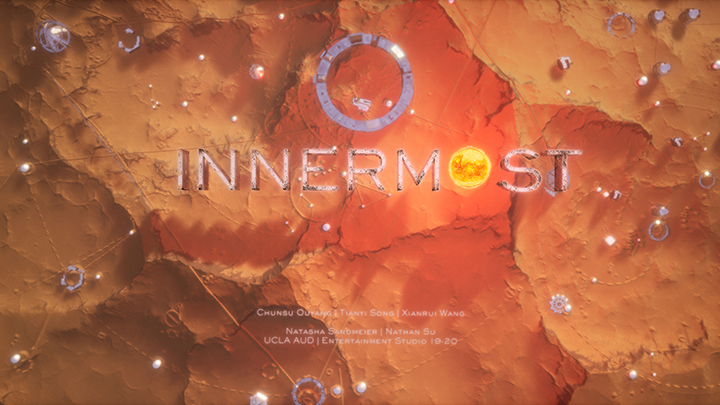
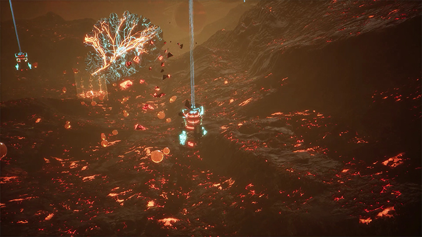
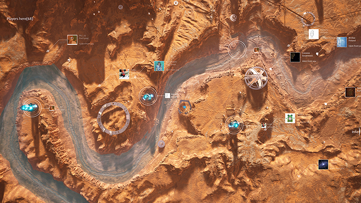
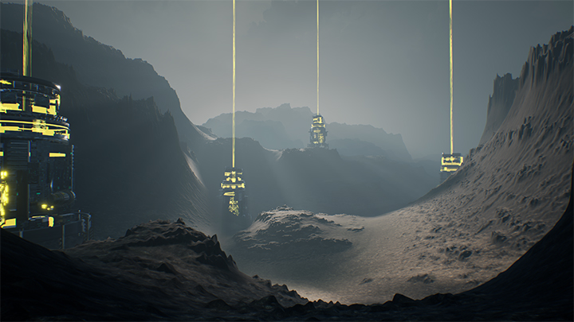
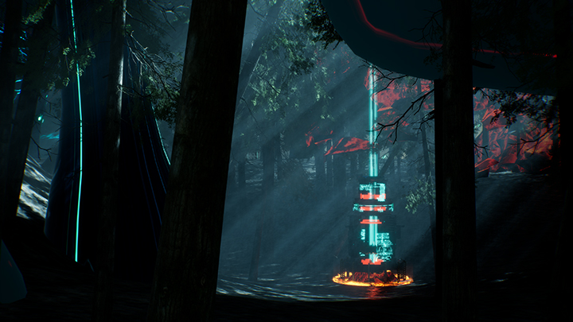

INNERMOST
Entertainment Studio 2019-2020, led by Natasha Sandmeier & Nathan Su.
Project by Chunsu Ouyang, Tianyi Song, Xianrui Wang.
Software: Rhino, Cinema 4D, Unreal Engine 4
In this game, planetary terraforming is used as a procedural metaphor for self-discovery and interpersonal communication that people embark upon in everyday life.
The objective of the game is for each player to reach their own planetary world and to reveal its character, which in turn symbolises the player's own nature as an individual person and member of the game world's interplanetary terraforming system.
A new player progresses from tourist in the worlds of others to caretaker / environmental architect of their own world through journeys of strategic exploration, terraforming and resource exchange. With each task they complete, a player uncovers new information about the nature of the planet that is waiting for them.
The game narrative is from a streamer who played this game as a new player and was obsessed with building/exchanging/terraforming in the worlds of others. Finally his obsession costs the well-being of his own planet.
2020 INNERMOST - OFFCIAL TRAILERVimeo
2020 INNERMOST - OFFCIAL VIDEOBilibili




